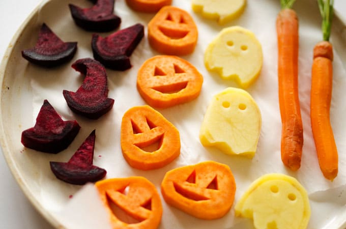
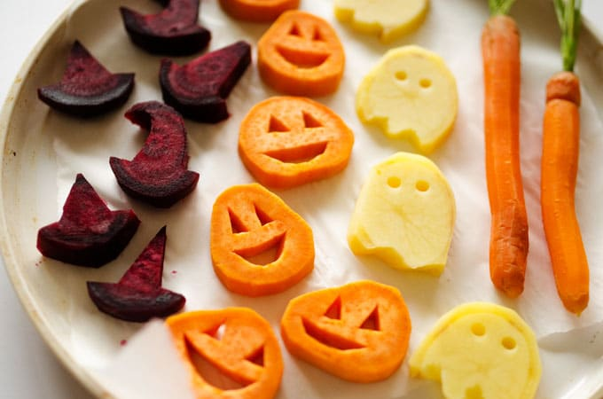

Sinu keitering, sinu halloween!
Telli imemaitsvad toidud meilt!
Suupisted
Hinnad alates 2.50€
Joogid
Hinnad alates 1.50€
Magustoidud
Hinnad alates 4.99€
Snäkid
Snäkid on harilikult mõnusaks vahepalaks toidukordade vahel või pisikesed ampsud pidudele ja õhtul televiisori vaatamise kõrvale. Snäkid on tihti asendamatud abimehed, kui kiiresti on vaja võõrustada külalisi või võita aega kuni pearoog valmib. Snäkid on toidud, mida on kiire ja lihtne valmistada ning hõlbus süüa.
Joogid
KARASTUSJOOGID, MAHLAD, PIIM Evian 50 cl 2.00 Vichy 50 cl 2.00 Coca-Cola, Fanta, Sprite 50 cl 2.50 Nestea Ice Tea, Cappy Ice Fruit 50 cl 2.50
Muusika
Võimalik tellida ka muusika meie tagasihoidlikust ettevõttest. Tavaliselt on igal pool restorandises ja poodides alati healoomuline muusika, et teie, kas siis õhtusöök või poes käimine kulgeks rõõmsalt ja meeldejäävalt. Pakume ka meie väikse lisatasu eest meeldivat muusikat, aga selleks andke meile varakult teada!.
Meie uued imemaitsvad kõrvitsakoogid teie peo jaoks
Imehea maitsega ja natukene vürtsikad kõrvitsakoogid just teile!
Seda sa pead lihtsalt proovima!
Muud ettevõtte söögid

 
